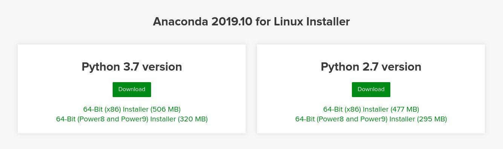
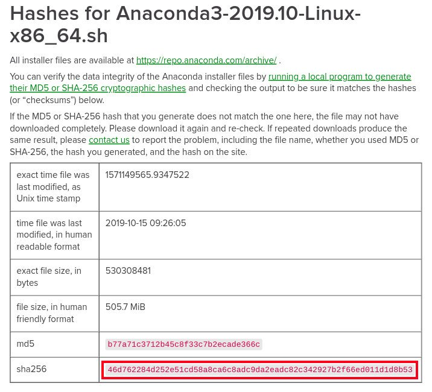

Debian 10 上安装 Anaconda 教程
Anaconda 是最受欢迎的 Python/R 数据科学和机器学习平台。它用于大规模数据处理，预测分析和科学计算。
在本教程中，我们将指导您在 Debian 10 上下载并安装 Anaconda Python Distribution 。
安装 Anaconda
Anaconda 发行版附带了 1500 多个开源数据包。它还包括 conda 命令行工具和称为 Anaconda Navigator 的桌面图形用户界面。
在撰写本文时， Anaconda 的最新稳定版本为 2019.10 。在下载 Anaconda 安装程序脚本之前，请访问 Anaconda 下载页面，检查是否有可用于 Python 3 的 Anaconda 新版本可供下载。

使用 wget 或 curl 下载 Anaconda 安装脚本：
wget -P /tmp https://repo.anaconda.com/archive/Anaconda3-2019.10-Linux-x86_64.sh
下载可能需要一些时间，具体取决于您的连接速度。完成后，使用以下 sha256sum 命令验证脚本的数据完整性：
sha256sum /tmp/Anaconda3-2019.10-Linux-x86_64.sh
您应该看到类似以下的输出：
46d762284d252e51cd58a8ca6c8adc9da2eadc82c342927b2f66ed011d1d8b53 /tmp/Anaconda3-2019.10-Linux-x86_64.sh
确保上面命令中打印的哈希值与您要安装的 Anaconda 版本在 64 位 Linux 页面上的 Anaconda with Python 3 上可用的哈希值匹配。
https://docs.anaconda.com/anaconda/install/hashes/Anaconda3-2019.10-Linux-x86_64.sh-hash/

运行脚本以启动 Anaconda 安装过程：
sh /tmp/Anaconda3-2019.10-Linux-x86_64.sh
Welcome to Anaconda3 2019.10
In order to continue the installation process, please review the license
agreement.
Please, press ENTER to continue
>>>
按 ENTER 以继续，然后按 SPACE 以滚动查看浏览许可证。审核完许可证后，系统将提示您接受许可证条款：
Do you accept the license terms? [yes|no]
[no] >>> yes
输入 yes 要接受的许可证，脚本将要求您选择安装位置。
Anaconda3 will now be installed into this location:
/home/vagrant/anaconda3
- Press ENTER to confirm the location
- Press CTRL-C to abort the installation
- Or specify a different location below
默认位置适合大多数用户。按 ENTER 确认位置，然后将开始安装过程。
安装可能需要一些时间。完成后，您将看到以下内容：
Preparing transaction: done
Executing transaction: done
installation finished.
Do you wish the installer to initialize Anaconda3
by running conda init? [yes|no]
键入 yes ，然后按 ENTER ，脚本将添加 conda 到您的 PATH ：
==> For changes to take effect, close and re-open your current shell. <==
If you'd prefer that conda's base environment not be activated on startup,
set the auto_activate_base parameter to false:
conda config --set auto_activate_base false
Thank you for installing Anaconda3!
===========================================================================
Anaconda and JetBrains are working together to bring you Anaconda-powered
environments tightly integrated in the PyCharm IDE.
PyCharm for Anaconda is available at:
https://www.anaconda.com/pycharm
要激活 Anaconda 安装，请使用以下命令将 Anaconda 安装程序添加的新环境 PATH 变量加载到当前 Shell 会话中：
source ~/.bashrc
要验证 Anaconda 是否已成功安装，请使用以下 conda 命令：
conda info
active environment : base
active env location : /home/vagrant/anaconda3
shell level : 1
user config file : /home/vagrant/.condarc
populated config files :
conda version : 4.7.12
conda-build version : 3.18.9
python version : 3.7.4.final.0
virtual packages :
base environment : /home/vagrant/anaconda3 (writable)
channel URLs : https://repo.anaconda.com/pkgs/main/linux-64
https://repo.anaconda.com/pkgs/main/noarch
https://repo.anaconda.com/pkgs/r/linux-64
https://repo.anaconda.com/pkgs/r/noarch
package cache : /home/vagrant/anaconda3/pkgs
/home/vagrant/.conda/pkgs
envs directories : /home/vagrant/anaconda3/envs
/home/vagrant/.conda/envs
platform : linux-64
user-agent : conda/4.7.12 requests/2.22.0 CPython/3.7.4 Linux/4.19.0-5-amd64 debian/10 glibc/2.28
UID:GID : 1000:1000
netrc file : None
offline mode : False
更新 Anaconda
更新 Anaconda 是一个非常简单的过程。首先使用以下 conda 命令进行更新：
conda update conda
当提示您是否确认更新时，键入 y 以继续。
一旦 conda 被更新，继续更新 anaconda：
conda update anaconda
与之前相同，出现提示时，键入 y 以继续。
您应该定期更新 Anaconda 安装。
卸载 Anaconda
要从 Debian 系统上卸载 Anaconda ，请首先删除 Anaconda 的安装目录：
rm -rf ~/anaconda3
编辑 ~/.bashrc 文件，然后从 PATH 环境变量中删除 Anaconda 目录：
# >>> conda initialize >>>
# !! Contents within this block are managed by 'conda init' !!
__conda_setup="$('/home/vagrant/anaconda3/bin/conda' 'shell.bash' 'hook' 2> /dev/null)"
if [ $? -eq 0 ]; then
eval "$__conda_setup"
else
if [ -f "/home/vagrant/anaconda3/etc/profile.d/conda.sh" ]; then
. "/home/vagrant/anaconda3/etc/profile.d/conda.sh"
else
export PATH="/home/vagrant/anaconda3/bin:$PATH"
fi
fi
unset __conda_setup
# <<< conda initialize <<<
运行以下 rm 命令从用户主目录中删除隐藏的文件和文件夹：
rm -rf ~/.condarc ~/.conda ~/.continuum
结论
现在，您已经在 Anbian Debian 系统上下载并安装了 Anaconda ，可以查看官方的 conda 入门指南。